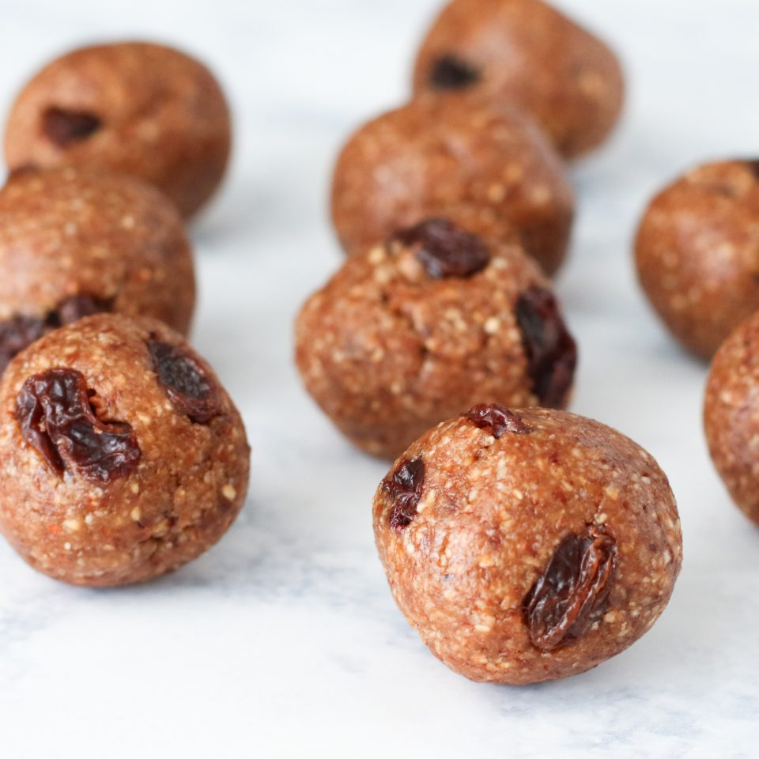

Oatmeal Cookie Dough Bites

Description
These oatmeal cookie dough bites are a perfect bite sized treat for your sweet tooth. Simple to make and only require minimal ingredients.
Ingredients
- 1 cup rolled oats
- 1/2 cup cashews
- 1 teaspoon vanilla extract
- 1 teaspoon cinnamon
- 1/2 cup pitted dates
- 1-5teaspoons of water as needed
Instructions
- In a food processor, add the oats, cashews (or hemp seeds), and cinnamon. Process until oats and cashews are a coarse flour.
- Add the dates to the food processor. Process the ingredients together.
- Add the vanilla and pulse together. If the dough is not sticking together, add 1-5 teaspoons of water (start with 1 and add more as needed).
Continue to process until the dough starts to form a ball or at least sticks together when pinched.
- Spread the dough out and sprinkle the raisins on top. Fold the dough together until the raisins are well incorporated into the mixture.
- Roll the dough into 12-15 small balls. Place the bites into a large glass container. Enjoy as is, or transfer to the fridge or the freezer to allow it to set.